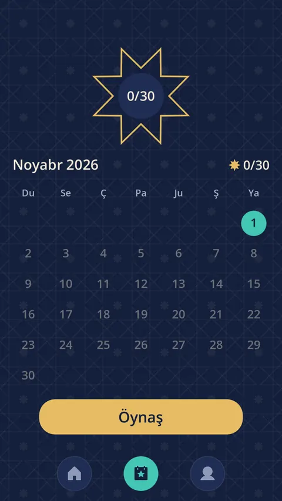

Android · Жабық тестілеу
Girih
Өзбек гирих өрнегі стиліндегі жебе жұмбағы: 1000 деңгей және Өзбекстанның 200 ескерткіші.
Жақында Google Play-де
Құпиялық саясаты ↗
Google Play сілтемесі қосымша шыққанда осында болады.

Әр жебе өзі көрсеткен жаққа ұшып шығады — егер жолында ештеңе болмаса. Дұрыс ретті табыңыз, алаңды тазалаңыз, сонда жебелерден Регистан, Кальта-Минор, Шахи-Зинда сияқты ескерткіштер пайда болады. Интернетсіз жұмыс істейді және арзан телефондарда да жеңіл.
Мәселе
Жұмбақ ойындарының көбі таймермен асықтырады және интернет талап етеді, ал өзбек өрнектері мен ескерткіштері оларда сирек кездеседі.
Шешім
Girih интернетсіз және таймерсіз жұмыс істейді. Әр деңгей өзбек гирих өрнегі стилінде, алаң тазаланғанда Өзбекстанның бір ескерткіші ашылады.
Скриншоттар



Мүмкіндіктер
- 1000 деңгей — оңайдан қиынға
- 200 ескерткіш: фото және қысқа әңгіме
- Күнделікті тапсырма және 16 жетістік
- Интернетсіз жұмыс істейді, таймер жоқ
Технологиялар
- Godot 4
- GDScript
- Android
- Firebase
- AdMob
- Play Billing